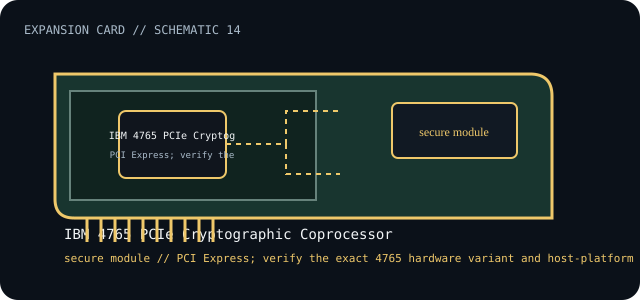

[ INDIVIDUAL COMPONENT // EXPANSION CARDS ]
IBM 4765 PCIe Cryptographic Coprocessor
PCI Express cryptographic coprocessor for hardware-backed keys and cryptographic operations. This is a model-specific catalog entry; confirm the exact label and revision before use.

IDENTIFICATION: Match the full model/part number and board revision to the label. Port and bus information below is included only where the linked manufacturer or standards documentation supports it; revisions and platform support may differ.
Specifications and service checks
| Catalog subcategory | Security coprocessors |
|---|---|
| Exact model / part identifier | IBM 4765 (use the installed model/assembly label to distinguish variants) |
| Bus / host interface | PCI Express; verify the exact 4765 hardware variant and host-platform slot support in IBM installation documentation. |
| Verified interfaces / protocols | Cryptographic coprocessor accessed through supported IBM cryptographic middleware; no general-purpose external ports. |
| OS / driver / firmware caveat | IBM cryptographic middleware and platform/OS support are required and vary by release. Use the 4765 installation guide, approved firmware and matching software; do not treat it as a plug-and-play desktop PCIe device. |
| Service note | Keep secure module handling, software level and firmware pairing in the service record. Follow IBM procedures for tamper state, key backup, and replacement; never flash firmware intended for another variant. |
Installation and archival notes
- Record the board model, revision, serial/date code, firmware, bracket, accessories, and the documentation revision used to identify the unit.
- Confirm the host slot's electrical wiring/keying, required power, supported OS/driver, and any platform or option-ROM restriction in the cited model documentation.
- Use ESD precautions. Do not infer pinout, compatibility, protocol, boot support, or revision equivalence from a similar connector or product-family name.
Keep secure module handling, software level and firmware pairing in the service record. Follow IBM procedures for tamper state, key backup, and replacement; never flash firmware intended for another variant.
Model-specific sources
- IBM — 4765 PCIe Cryptographic Coprocessor overviewExact model-family overview and supported cryptographic role.
- IBM — 4765 Installation and User GuideModel-specific installation, firmware, software and service requirements.
Source links are selected for this exact model or its manufacturer-documented family. Review the source revision and your card's printed identifiers before service.